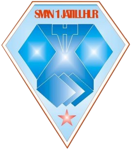

CORE BELIEF
“Datasets can survive missing values. But people? We slowly break when we keep acting like the missing parts of us don’t matter.”
Welcome to My Digital Platform, a portfolio website integrated with an AI chatbot that allows visitors to learn more about me, my projects, experiences, and skills interactively.
Hello everyone! My name is Muhammad Fadil Syahputra, and people usually call me Fadil. I am an admitted student at the University of Education Indonesia with a strong interest in Machine Learning, especially Data Analytics.
Throughout my academic journey, I have focused on improving my skills by actively participating in several projects while also expanding my network by connecting with students and individuals who inspire me to grow and develop further.
Deeply focusing on Machine Learning frameworks and Data Analytics pathways. Actively exploring computational logic, statistical modeling, and structural algorithm optimization to build efficient data-driven solutions.

Built a strong foundation in advanced mathematics, analytical reasoning, and algorithmic thinking through diverse academic and leadership experiences. Strengthened problem-solving, teamwork, and innovation skills by leading student organizations, founding a computer learning club, participating in robotics competitions, and engaging in various technology-focused projects and activities.
Human logic protocols active and integrated within professional pipelines:
This is an optional test from RevoU to practice data analyst skills using a case study. The case study involves a deep understanding of filtering data with SQL. We answered 3 questions in 2 different approaches: using AI and without AI.
For my 2026 physics practical exam, I built a soil moisture sensor using an ESP8266. It measures how wet the soil is.
I worked on a math learning module for SNBT Club, built in Overleaf using LaTeX to keep everything well-formatted.
Our robot is built to move around an arena on its own, avoid obstacles, and put out small flames.
A dimension-hopping fox game with traps and obstacles. Available on itch.io for Windows and Android.
I founded and lead an organization focused on providing college preparation materials for senior high school students. Our main vision is to help students prepare for higher education opportunities, such as studying abroad through IELTS and CSCA preparation, as well as preparing for the SNBT exam.
Collaborated with a team to establish a new extracurricular activity at school, served as a coding tutor, organized school olympiads to select representatives for city level competitions, and managed extracurricular schedules and meetings.
Served as a tutor for Quantitative Reasoning (PK), teaching topics such as trigonometry, statistics, functions, and other mathematics concepts, while also providing daily Problem of the Day (POTD) exercises for members.
Led the organization by planning programs, organizing teams based on members abilities, conducting monthly mental training sessions for student council members, and serving as a speaker for the Student Leadership Basic Training program.
Collaborated with the Student Council President to plan organizational programs, served as the chief organizer for workshop events and school ambassador selections, and worked together with Putra Putri UPI Purwakarta in collaborative activities.
“Datasets can survive missing values. But people? We slowly break when we keep acting like the missing parts of us don’t matter.”